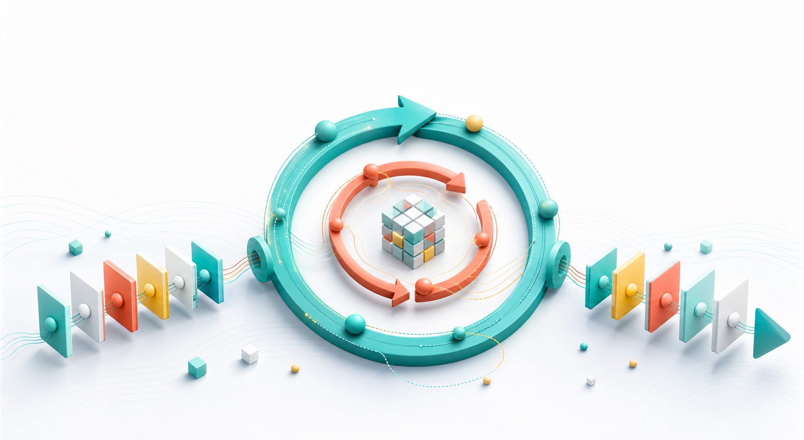

它反对什么？
反对把“从头预训练”默认等同于 trillion tokens、大集群、raw-text next-token prediction。作者想证明：小预算也能做 architecture-level pretraining research。

这篇论文的核心主张很锋利：如果架构、目标函数和数据形态一起设计，1B 参数模型也可以用很小的训练预算进入 2B-7B open model 的性能区间。
One Sentence
HRM-Text 把语言模型看成一个“先理解任务、再反复执行”的系统：慢速的 H module 保持高层语义状态，快速的 L module 做局部迭代；训练时只对 response 计 loss，并用 PrefixLM 让 instruction 内部可以双向互看。
反对把“从头预训练”默认等同于 trillion tokens、大集群、raw-text next-token prediction。作者想证明：小预算也能做 architecture-level pretraining research。
押注结构先验：让模型有更多“内部计算步”，但不等价增加参数；同时把训练目标贴近真实使用场景，即给定 instruction 生成 answer。
它不是“1B 全面打败 7B”的证明。它更像 existence proof：在 instruction-heavy 数据和小预算下，co-design 能显著改变 compute-to-performance ratio。
读法提醒：论文中同时出现 40B unique tokens 和 60B training duration tokens。前者是去重数据规模，后者是带重复采样的训练 token 数；效率图强调 40B unique tokens。
Glossary First
这篇论文的术语很多，但主线其实不复杂：它在 Transformer block 外面加了“循环计算”，再用训练技巧避免循环带来的梯度问题。
H moduleHigh-level / slow state。它每个大周期更新一次，更像“当前任务语义、计划、全局上下文”的状态容器。
L moduleLow-level / fast state。它在一次 H 更新前连续执行 3 次，用来做局部 refinement。
MagicNorm内部用 PreNorm 保留梯度通路，模块出口再加一个 norm 控制 forward variance。关键在 N 个 forward steps 与 K 个 backward steps 的不对称。
Warmup deep credit不是一开始就让梯度穿过很长循环链。训练初期 K=2，之后线性 warm up 到 K=5。
Task-completion objective不对 instruction token 计 loss，只优化 -log P(xa | xq)。也就是把学习压力集中在“回答得对”。
PrefixLM maskInstruction segment 内部双向 attention；response segment 仍然 causal。这样 decoder-only 实现里有一点 encoder-decoder 的味道。
Architecture
论文里的 forward pass 是两个高层周期；每个周期先做三次快速 L 更新，再做一次慢速 H 更新。你可以把它看成：同一组参数被重复调用，让模型获得更深的 serial computation。
Canvas 图按论文设定画出 H2L3：2 个 H cycles，每个 cycle 包含 3 个 L updates 和 1 个 H update。
输入 embedding 初始化 H state 和 L state。每个 H cycle 中 L module 连续更新三次，然后 H module 更新一次，最终 H state 进入 LM head 产生 logits。
# H2L3: two high-level cycles, three low-level steps per cycle z_H = init_from_input_embeddings(tokens) z_L = fixed_low_level_state() for h_cycle in range(2): for l_step in range(3): z_L = L_module(z_L, z_H, mask) z_H = H_module(z_H, z_L, mask) logits = lm_head(z_H) # Backward horizon warms up: # K = 2 early, then linearly grows to K = 5
PreNorm
梯度路径干净，但 residual 累加可能让 hidden-state variance 长大。
PostNorm
forward activation 更稳，但 normalization 可能切断干净的 identity gradient path。
MagicNorm
内部 PreNorm，出口 Norm；用 TBPTT 的短 backward horizon 避开纯 PostNorm 的训练痛点。
Objective
作者认为 raw-text next-token prediction 在小预算下浪费了很多学习信号：真实推理时，prompt 已经给定；模型真正需要学的是如何根据 prompt 产出 response。
PrefixLM attention mask绿色区域是 instruction token 之间的双向 attention；珊瑚色区域是 response token 的 causal generation。
-log P(x)
把 instruction 和 response 都当作要预测的 token。对已知 prompt 也交 loss。
-log P(xa | xq)
只在 answer 上计 loss，让小预算训练更专注于完成任务。
PrefixLM：prompt 先被充分整合
Instruction 内 token 可以互相看，response 仍按自回归方式生成。
# tokens = [instruction prefix | response suffix] loss_mask = response_positions_only attention(i, j) = allow if i and j are both in instruction allow if i is response and j <= i block otherwise
Evidence
最有解释力的不是单个 benchmark，而是两个层次的证据：同预算对比里 HRM 更能吃掉训练 FLOPs；消融里 objective、PrefixLM、HRM architecture 都逐步抬高平均分。
平均分取论文 Table 4 的八个 benchmark。横轴为 log scale，HRM-Text 的 token 口径使用论文强调的 40B unique tokens。
| Model | Budget | Avg |
|---|---|---|
| HRM-Text 1B | 1e21 FLOPs / 40B unique | 73.4 |
| OLMo3 7B | 252e21 FLOPs / 6T | 69.6 |
| Ouro 1.4B | 259e21 FLOPs / 7T | 63.7 |
| Llama3.2 3B | 162e21 FLOPs / 9T | 59.8 |
| Qwen3.5 2B | 432e21 FLOPs / 36T | 58.2 |
| Gemma3 4B | 96e21 FLOPs / 4T | 56.6 |
关键读法：HRM-Text 在 MMLU 上不是最高，但在 GSM8K、DROP、MATH 这些更偏 task execution / reasoning 的指标上很强，这正符合作者关于“reasoning core vs factual breadth”的讨论。
基于论文 Table 3。Canvas 条形图显示从 full causal LM 到 response-only、PrefixLM，再到 HRM architecture 的平均分变化。
What To Believe
这篇论文最值得记住的不是“一个新模型名”，而是一个设计原则：当模型预算很小，架构、目标函数、数据格式之间的错配会被放大；反过来，co-design 的收益也会变大。
H/L modules 相当于给模型更多内部计算步，而不是简单堆更多独立参数。
Implementation Notes
这些图的标记量不大，SVG 也能做；这里使用 Canvas2D 是为了统一绘制矩阵、路径、散点和条形，并保留后续扩展到更高密度实验图的路径。文本、链接、按钮、表格和语义信息仍由 HTML 承担。
devicePixelRatio capped at 2，移动端优先保证文字和触点。
getBoundingClientRect() 映射。